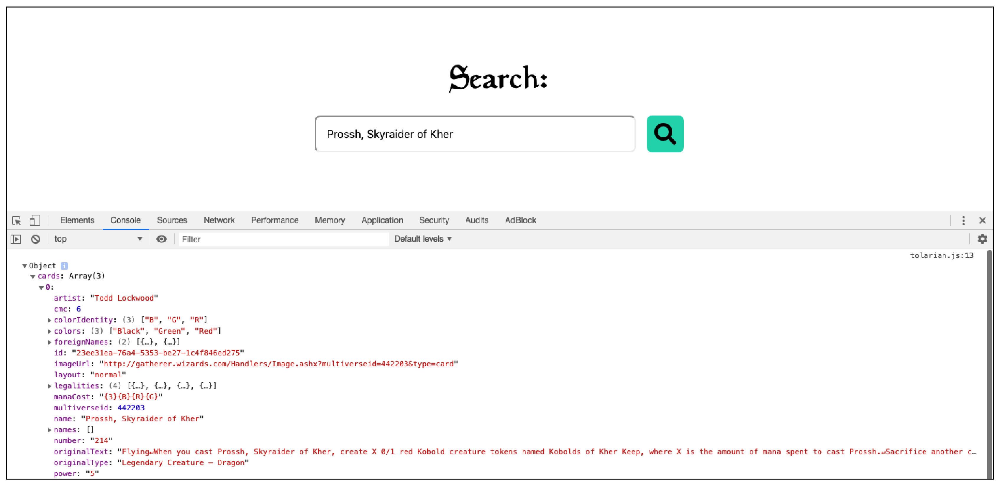
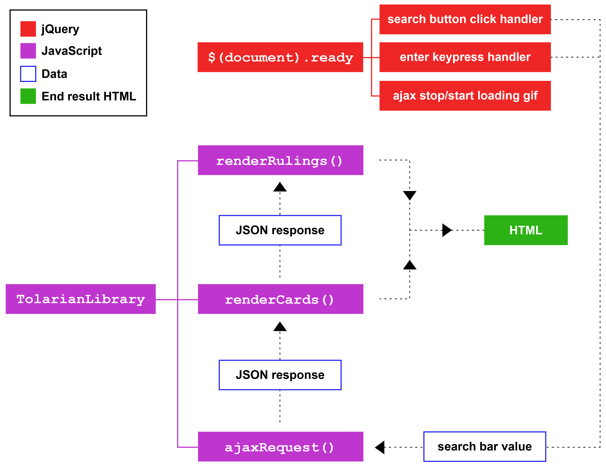
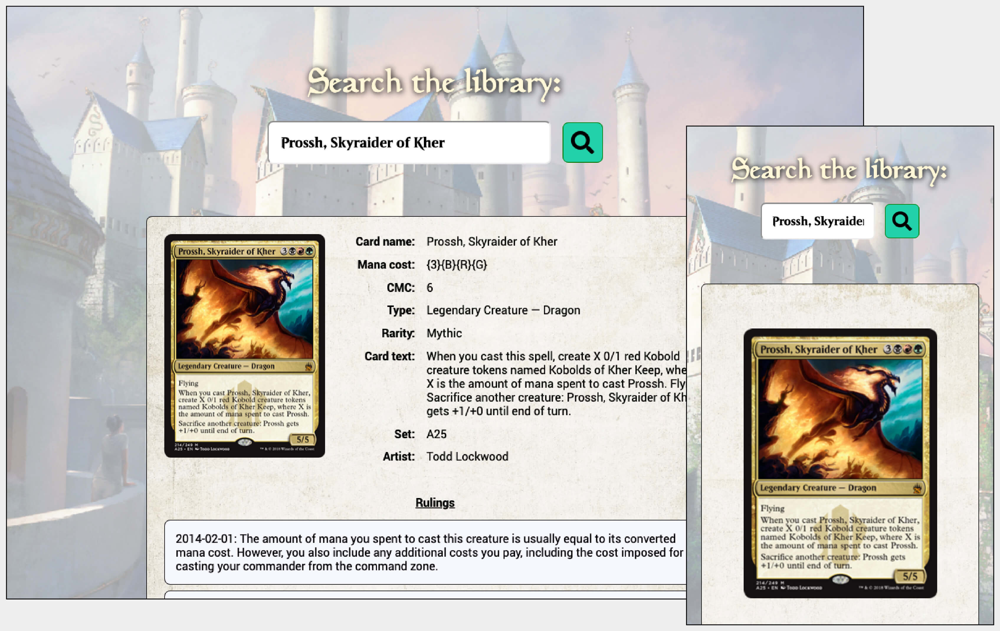
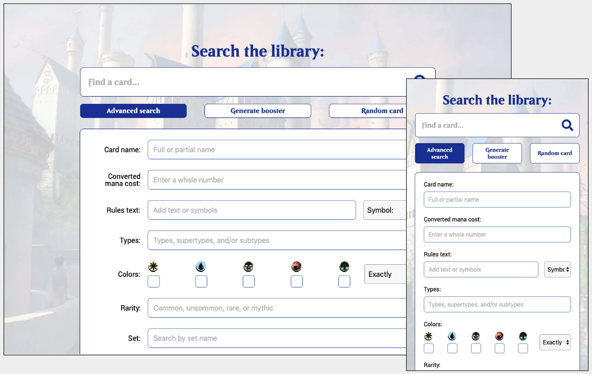
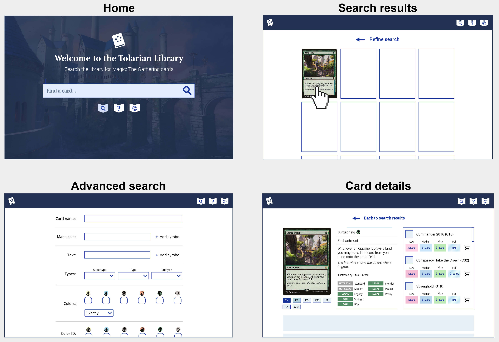
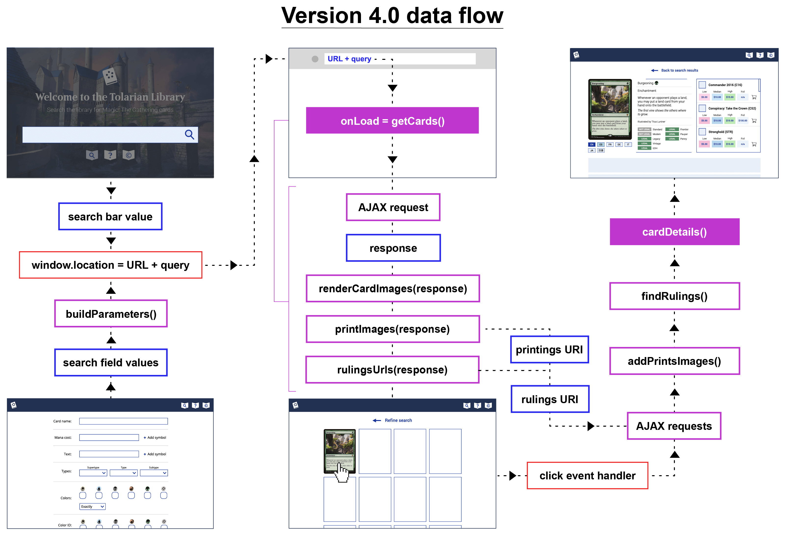
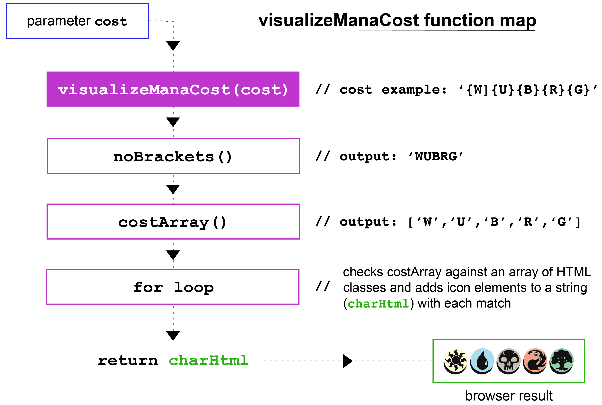
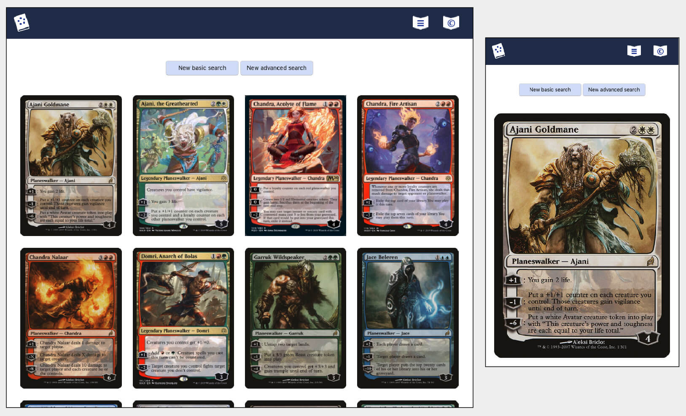

I connected with an API to create an app that renders information about Magic: The Gathering cards, including images, market prices, tournament rulings and external resources.
I was inspired to build a search engine of my own upon finding the Magic: The Gathering Developers API documentation. Through AJAX requests, the API allows third-party applications to make up to 5000 requests per hour for free. I built a static webpage with a search bar and began testing with the console to get a sense for how the JSON responses were structured.
Once I’d built the AJAX click handler, I began building a more structured HTML design around it. I wrote functions that looped through the response object and appended chunks of HTML to the page with jQuery when a user made a request through the search bar.
Function maps helped me visualize what I was doing and how all the pieces worked together
I kept the design simple at first as I wrote the core functionality. My objective for the first version of the app was to render the card’s image, its basic stats and associated tournament rulings all in repeatable modules on the page. Once I had this in place, I would be able to progressively expand the design.
In version 1.0, I was able to append whatever value was in search bar to a single endpoint URL, which would return cards with a full or partial name match. In version 2.0, my goal was to build an advanced search feature that allowed a user to narrow down their search results to certain characteristics, like a card’s cost, colors, print edition or artist.
This process required me to write more JavaScript than before. The API used standard URL query strings, which could be appended together with percent encoding to form a single request. I created a function that looped through all of the values entered and appended them to the endpoint URL as individual parameters. jQuery’s param() method saved me a lot of work here!
I was ambitious with version 2.0 and built features that allowed a user to search for a random card and to open boosters from a selected print edition (boosters are 15-card packs with eleven common cards, three uncommon cards and one rare or mythic card). Unfortunately, the API’s support for these features was incomplete, so I trimmed them out of the scope in later versions.
Up until version 3.0, the search function immediately appended modules to the page based on the information entered. I wanted to add a feature that appended card images to the page in a grid, which would create a more visually appealing experience. Each card image would act as a jQuery object that, when clicked, would reveal the module for that card and all of its info.
jQuery’s append() and detatch() methods let the user toggle between their search results and the info module for the card they clicked.
By version 3.0, the limitations of the API I was using were beginning to show. I had to create a function that accounted for entries with missing image files, which was not ideal for version 3.0's image grid design. Additionally, cards with multiple print versions were all displayed separately, which muddied the experience. I decided to research other APIs and see if I could make the next version even better.
Cards from multiple print runs got repetitive, and many JSON objects had missing image URIs.
After reading its documentation, I made a switch to Scryfall’s API endpoints, which offered all the same features as MtG Developers and more. The first versions were good practice for the final version, because they helped me nail down the basics before I began using the syntax and features of a more complex API.
The biggest structural change in the final version was the use of multiple pages instead of one static page. I wanted to create a home page, a separate page for the advanced search options, and a results page where cards would be loaded dynamically. I needed to break up my JavaScript file and keep my workflow organized.
Visual mockup samples of version 4.0's main pages I would need to build and bring to life with JavaScript.
Once I built the HTML shells that the JavaScript would populate with data in each search result, I began figuring out how to structure the code. I was able to reuse a lot of functions I'd written from previous versions, which helped set a starting foundation.
Secondary AJAX requests fire on click when a user selects the card. This keeps waiting time to a minimum, since the program requests only the details it needs for any given search.
Additional helper functions were needed to translate data about different parts of a card into HTML. These functions required the most creativity and work. My knowledge of the game helped me when I needed specific test cases or found something missing in my code, like a condition to display dual-faced cards (which have different JSON response structures).
This function requires a regular expression to turn mana costs in a card's JSON response from bracket notation into a string of characters that can be matched to the mana icon style set I use to display mana cost symbols.
I got feedback from friends who also played the game through each version, which helped me decide on the final structure of the site. Magic is a complex game, and I noticed that many resources on the internet transfer the burden of that complexity onto the user. My goal was to create a site with a simple, linear user experience that performs on desktop, tablet or mobile.
